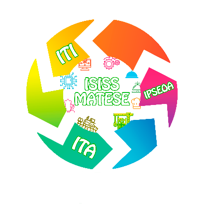

La Natività dell’ISISS Matese
La natività della nostra scuola, con i poster accanto ai personaggi e la guida dell’ISISS Matese al tuo fianco. Sul computer cammini con la tastiera e guardi trascinando il mouse.
Sto caricando il modello…

La natività della nostra scuola, con i poster accanto ai personaggi e la guida dell’ISISS Matese al tuo fianco. Sul computer cammini con la tastiera e guardi trascinando il mouse.